Tonight's build: what was made
Leo · 22 Oct 2026 · 7 chats, joined on branch Leo · goes live only when Leo says push · the plan was 0.107
Match file (CanvasMatch.tsx): celebrations, big moments, bicycle kick, a longer goal video. All additive; canvasEngine.ts is changed only for weather, and only on the test page. Keeper (keeperBrain.ts): bicycle reaction delay and penalty habits; with no habit he is exactly as before. Mikey: 3 lines in manager.ts (no sack after promotion) and an injuries plan for you. Admin tab (AdminNavPanel.tsx) made cheap on slow phones. Match tests all pass.
1 · Goal celebrations
- You score, you run to the corner, you celebrateOnly your own goals. Up to 2 s run to the nearer corner, then the move equipped in the shop. Tap anywhere skips (0.04 s). 2D, 3D and the goal video all show the same run.
- Six in the shopHands Up, Fist Pump (new), Jump (new), Roar (new), Aeroplane, Knee Slide. The knee slide was fixed: his knees were pressed together; now 33 cm apart.
- Goal videos run 2.5 s longerThe run and the move are in the video, even if you skipped in the match.
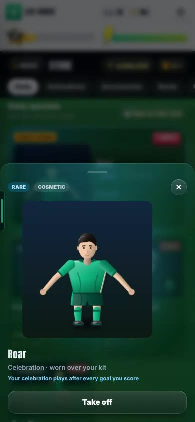
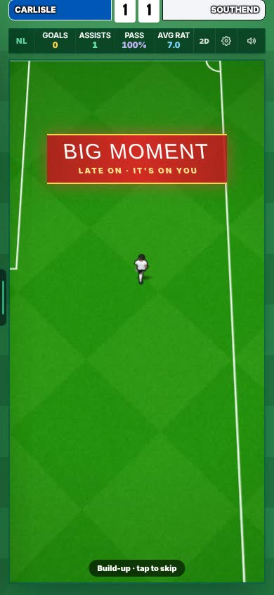
2 · Big moments
- 85' or later, level or one down, a chance for youRed "BIG MOMENT" banner, the crowd rises, a heartbeat. Score: the last 0.5 s in slow motion (result unchanged), a big roar, one of 14 new late commentary lines ("Late, late, he's won it!"). Miss: a groan.
3 · Social feed: fast on a cheap phone
Production build, CPU slowed 6×, 390×844, 150 posts. Measured.
- HowOnly posts near the screen are drawn. Videos are made off the main thread, kept on the phone (newest 40) and started at full time, so after a real match the video was ready 2–3 s after the feed opened.
- Goal of the MonthA monthly poll: your 3 best goals against 2 by other players in your league. Fans vote; you get one vote; a win adds fans.
- Two video bugs fixedVideos no longer stop 1–2 s after the goal. Cup accounts no longer post other competitions' news.
- Not metScrolling still has 11–16 hiccups of 0.14–0.17 s (target: none over 0.1 s).
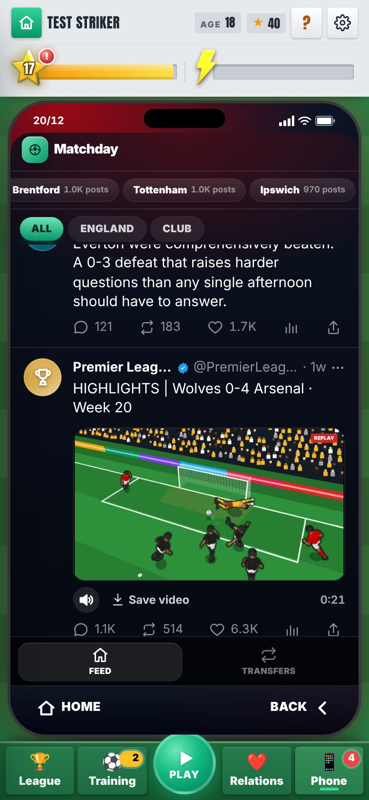

4 · Bicycle kicks
- Only for a cross above your head, moving across youAn orange "Bicycle!" button on the header screen. How often depends on Aerial: 1.4 times in 40 matches at Aerial 40, 8.6 at 80+.
- Hard to hit, deadly when cleanClean: 40 goals in 100 (a header from the same ball: 29–41). Badly timed: 15–25. New 2D and 3D animation; the crowd and the media treat it like a hat-trick.
- The 15 real overhead goals are back in Real Moments
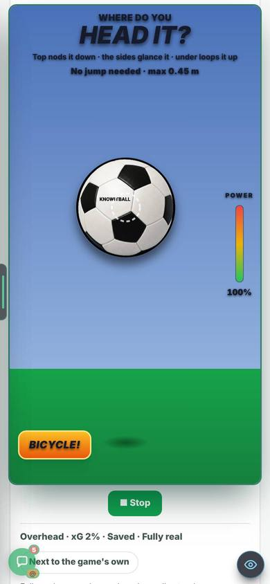
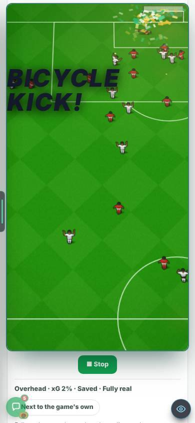
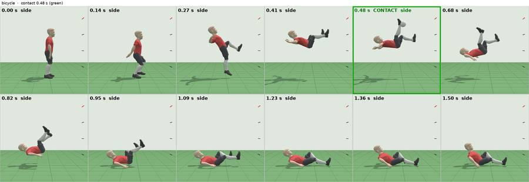
5 · Weather and pitch test page only
- /star-weather-devWind with a direction (a 10 m/s head wind cuts a long ball's carry by 8 m), rain makes the ball skid on, and each club has a pitch quality: lower leagues are worse, the Premier League is always perfect. In a dry spell a bad pitch kills the bounce.
- "Stops dead" was too harsh, so it was softenedFirst build: 87 in 100 normal passes died short on the worst pitch. Now 14 (6 on a clear day).
- Real game unchanged12 of 12 ball fingerprints are identical. Found: the live game's heavy pitch already kills 56 in 100 normal passes.
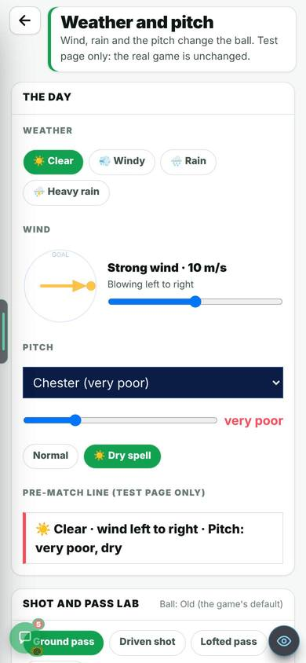
6 · Real Goals test page
- 8 paths, 411 levels (was 1 path, 50)World Cup & Euro, the five big leagues of 2017/18, Worldies, Bangers. Each path has its own stars.
- 61 Bangers, 2010–2025Written from public record and checked twice (22 corrected). Admin "Fix a banger" tool to correct a spot by eye.
- Daily Real GoalSame goal for everyone each day, with a streak. No leaderboard.
- Home opens in 0.4–0.55 s on a cheap phone (was 4.8–5.2 s)
- Shootout keeper reads your habits/star-shootout-dev only. Same side 5 times: he saves the 5th 35% of the time (was 23%).
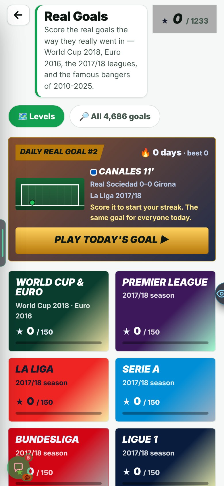
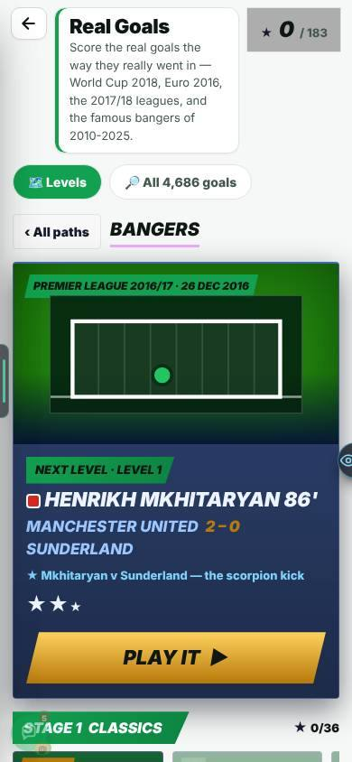

7 · End of season
- Your season videoEvery goal of the season in order, a Goal of the Season, an end card with your numbers. Skip always on; save it in one tap.
- Career goals galleryStats → Goals: every goal from tonight on. The best 10 go in the Hall of Fame.
- Season awards night (3D)A small room, five awards, three nominees each; the winner walks up. About 44 s, skippable.
- Injuries plan for MikeyA plan only, no code:
docs/plans/2026-10-22-injuries-revamp-for-mikey.md.

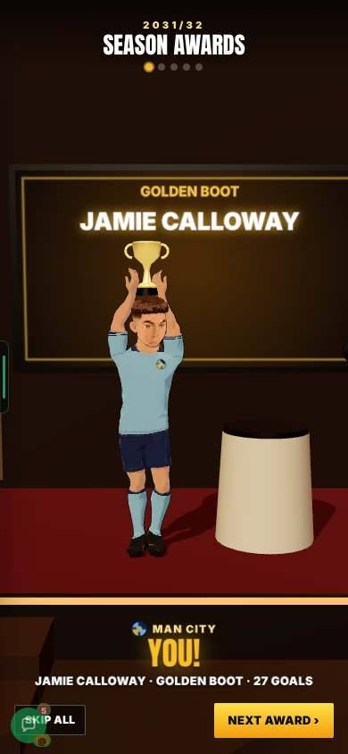
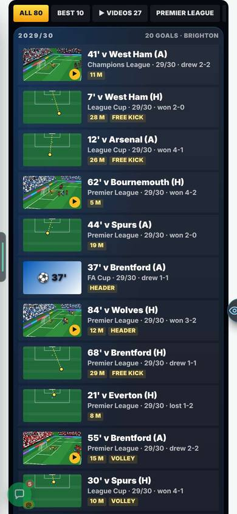
8 · Bug hunt: 17 fixed
- A refresh no longer throws you to HomeThe Ballon d'Or, the transfer window, the talks and "Deal agreed" come back where you were. Before, a refresh after "Deal agreed" lost the transfer.
- A manager is never sacked the summer he wins promotionMikey's area, 3 lines.
- The restFirst season said 2027/28 (now 2026/27); talks header showed the wrong wage; the welcome tour replayed every visit; the team sheet showed a different manager; the line-up buttons overlapped; the league dropdown was see-through; setup said "Step 1 of 2" twice; the scout said "The through the gate…"; offline badges retried about 2,000 times; clubs up from Step 3 said "Finished 24th".
- Tests: 414 of 417 pass(Was 408 of 414.) The rest are Harry's area, sent as team jobs.

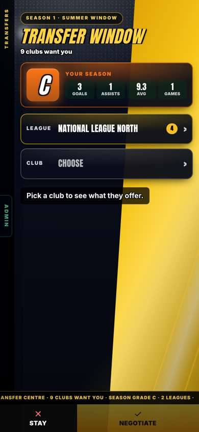
Known issues
- Feed scrolling still has short hiccups (above). Sound for big moments and the reel was measured, not heard. A team-mate can stand in front of you in the celebration video. The bicycle goal video uses the general commentary call. Awards night frame rate not measured on a real phone. This sandbox had no real squads, so invented players were used throughout.
Team jobs posted (6)
- Harry: match camera 1 px short at 372×704; a long-range drawing breaks a law; the removed data source's name in two patch notes; 3D training freeze (Head/Volley ↔ Free Roam); two chance tests failing on main after the build-up work. Everyone: the save is about 1 MB and rewritten on every change.
Checks (measured)
Type check clean · one-engine guard: no new copies · star tests and production build on the joined branch: see below · weather: 12 of 12 ball fingerprints identical · celebrations: ordinary goal commentary unchanged, byte for byte · penalty keeper with no habits: 400 decisions and 300 kicks identical.
On the joined branch: the production build passes. Of 430 star test files, 8 fail, and all 8 fail the same way on main (Harry's chance and camera work, or his old notes): chanceMaker, chanceJudge, freshness, kindMix, leadInGen, longRangeRules, match2dCam, realGoals. Four failures from tonight's join (credits, licences, headlines, test-page lock) were found and fixed.